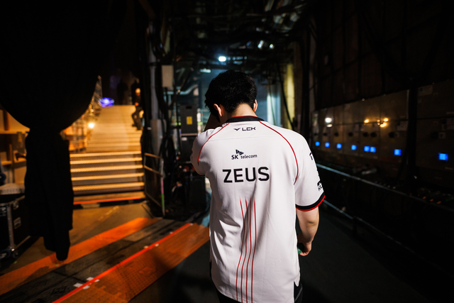

Hé lộ lịch tập "địa ngục", siêu sao BLG "gáy khét" sẽ ôm trọn danh hiệu LPL lẫn MSI
HLV của đại diện LPL cũng không thèm đả động gì đến khó khăn của học trò.
Đại diện LPL "khủng hoảng" toàn diện
Thất bại tại First Stand 2025 của Top Esports không chỉ nằm ở kết quả mà còn là những hậu quả kéo theo sau đó ảnh hưởng đến đại diện LPL lẫn cả khu vực. Đầu tiên, là những chỉ trích từ phía khán giả LPL dành cho màn trình diễn của các tuyển thủ. Mới đây, người ta còn phát hiện tuyển thủ Creme của TES liên tục chơi game cùng người yêu thâu đêm suốt sáng trong thời gian diễn ra First Stand 2025. Thế nhưng, khi HLV của TES lên phát biểu, ông không hề có động thái nào bảo vệ tuyển thủ này.
Cụ thể, trong chia sẻ mới đây, HLV của TES chỉ đề cập đến đóng góp của JackeyLove và 369 cũng như trách nhiệm của bản thân, hoàn toàn không đề cập đến Creme. Trong khi đó, ở thời điểm hiện tại, Creme mới đang là người hứng chịu nhiều chỉ trích nhất, chứ không phải JackeyLove hay 369.

Ngoài ra, trong một diễn biến khác, bạn gái của Creme - một nguyên nhân gián tiếp khiến anh trở thành tâm điểm sau thất bại của TES, cũng được cho là có những hành động nói xấu đồng đội của Creme. Cụ thể, khán giả LPL "đào" được một số bình luận từ bạn gái của Creme từng nhận định 369 là thành viên kém nhất của TES trong khi JackeyLove "không có tác dụng gì".

Khả năng đại diện LPL sụp đổ luôn là rất cao
Tưởng chừng chỉ là một giải đấu bình thường, nhưng tác động của kết quả tại First Stand đối với TES là rất lớn. Cần phải nói, đội tuyển này cũng có phần "không may", khi họ lại là đại diện của LPL tại một giải đấu quốc tế, sau khi các đại diện LPL đã thể hiện rất không tốt ở các kỳ MSI và CKTG liên tiếp.
Kế đến, chính là từ TES khi họ thi đấu không xứng đáng với kỳ vọng của người hâm mộ. TES có thể thua một HLE quá mạnh, nhưng thất bại mà không có nổi 1 ván gỡ gạc nào trước KC hay CFO là chuyện không thể chấp nhận. Nhất là khi CFO đến từ APAC - khu vực vốn chưa bao giờ được đánh giá ngang hay gần bằng LPL.

Ở giai đoạn còn lại của LPL cũng như của mùa giải 2025, sẽ không còn một giải đấu nào thử nghiệm hay đơn giản như thời gian qua nữa. Và khả năng TES sụp đổ luôn là rất cao, nhất là khi chính nội bộ các tuyển thủ cũng đang vô cùng bất ổn.